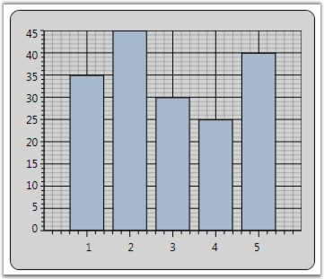
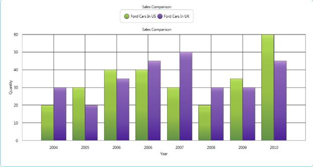

Chart for WPF allows to customize the length of the Axis Ticks and SmallTicks by using the ChartAxis.TickSize and ChartAxis.SmallTicksize properties.
Table 132: ChartAxis Property
|
ChartAxis Property |
Description |
|
TickSize |
gets or sets the length of the axis tick |
|
SmallTickSize |
gets or sets the length of the axis small tick |
|
[XAML]
<syncfusion:ChartArea.PrimaryAxis> <syncfusion:ChartAxis TickSize="7" SmallTickSize="4" /> </syncfusion:ChartArea.PrimaryAxis> |
|
[C#]
// Sets the Axis tick size. area.PrimaryAxis.TickSize = 7; area.PrimaryAxis.SmallTickSize = 3; |
The following image illustrates Chart with Axis TickSize and SmallTickSize set.

Figure 187: PrimaryAxis TickSize = "7"; SmallTickSize = "3"
See Also
ChartAxis GridLines, ChartAxis Lines, ChartAxis OriginLines
Support for customizing the Label position and TickLines along with the OrginAxis
This feature supports customizing the label position and TickLines along with the OrginAxis. Labels can be moved based on the AxisLabels type. Position of label will be changed based on LabelsPosition, and TickLines will be changed based on TickLinesPosition.
Properties
Table 133: Properties Table
|
Property |
Description |
Type |
Data Type |
Reference links |
|
ChartAxisLabels |
Used to set the position of axis label. |
Dependency Property |
AxisLabels |
NA |
|
ChartTickLinesPosition |
Used to set the position of tickline. |
Dependency Property |
TickLinesPosition |
NA |
|
ChartLabelsPoition |
Used to set the position of chart label. |
Dependency Property |
LabelsPosition |
NA |
|
TickLinesRange |
Used to set the size of TickLine to be placed inside the OriginAxis. |
Dependency Property |
Double |
NA |
|
SmallTickLinesRange |
Used to set the size of SmallTickLine to be placed inside the OriginAxis. |
Dependency Property |
Double |
NA |
Customizing the Label position and TickLines along with the OrginAxis
You can customize the Label position and TickLines along with the OrginAxis using the properties given in the above table.
The following code illustrates this:
|
[XAML]
<syncfusion:ChartArea.SecondaryAxis > <syncfusion:ChartAxis x:Name="axis" ChartAxisLabels="NextToAxis" ChartLabelPosition="Above" ChartTickLinesPosition="Inside" TickLinesRange="0.5" SmallTickLinesRange="0.5"/> </syncfusion:ChartArea.SecondaryAxis>
|
|
[C#]
XAxis.ChartAxisLabels = AxisLabels.NextToAxis; XAxis.ChartLabelPosition = LabelsPosition.Above; XAxis.ChartTickLinesPosition = TickLinesPosition.Inside; |

Figure 188: Label position and Ticklines are customized
Sample Link
To view samples:
1. Open the Syncfusion Dashboard.
2. Click the WPF drop-down list and select Run Locally Installed Samples.
3. Navigate to Chart Axis > Chart Axis Configuration > Demo.